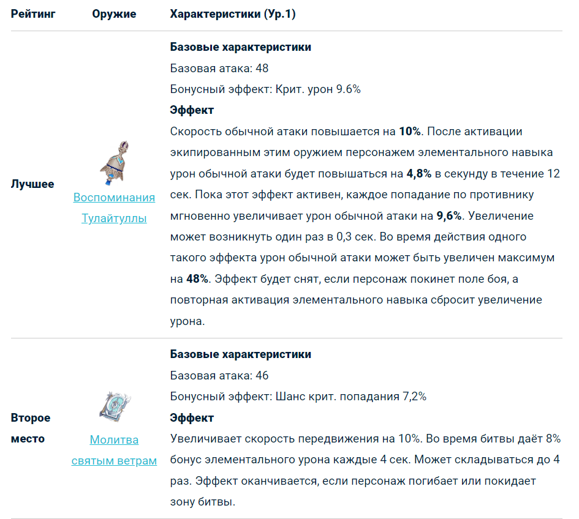
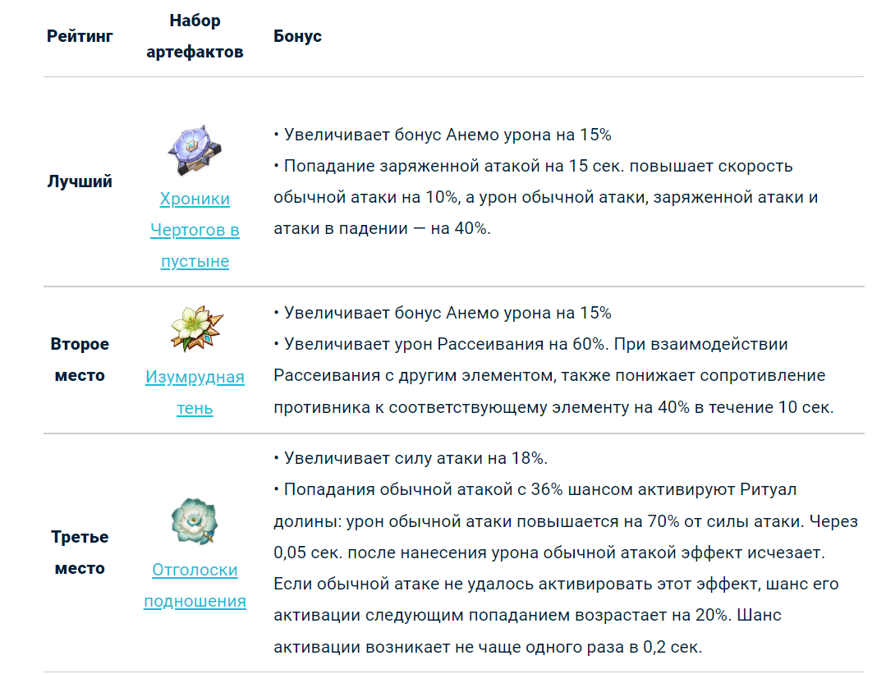

Странник (Скарамучча) – бывший Предвестник Фатуи и затерявшийся в вечности сосуд, обретший собственную волю. В игре предстает в качестве Анемо каталиста 5 ⭐ редкости. Загадочный юноша на протяжении всей истории является антагонистом. И, хотя его личность претерпевает некоторые изменения после сюжета Сумеру, он все же сохраняет присущие ему уникальные черты.
Лучшая сборка для максимального урона на данный момент. Для этой сборки важен баланс критов и бонус Анемо-урона. Лучше всего использовать оружие на Крит. урон, так как при возвышении у Странника поднимается Шанс крит. попадания. Кроме того, желательно иметь показатель Восстановления энергии не меньше, чем 120%, а также еще одного Анемо в команде (лучше всего — Фарузан), чтобы не было проблем с зарядкой ульты и ротациями.
Лучший сет для Странника — Хроники Чертогов в пустыне, так как именно он дает бонус Анемо, заряженной атаки и скорости. В качестве альтернативы можно использовать Изумрудную тень, особенно для команд, которые фокусируются на реакциях.
